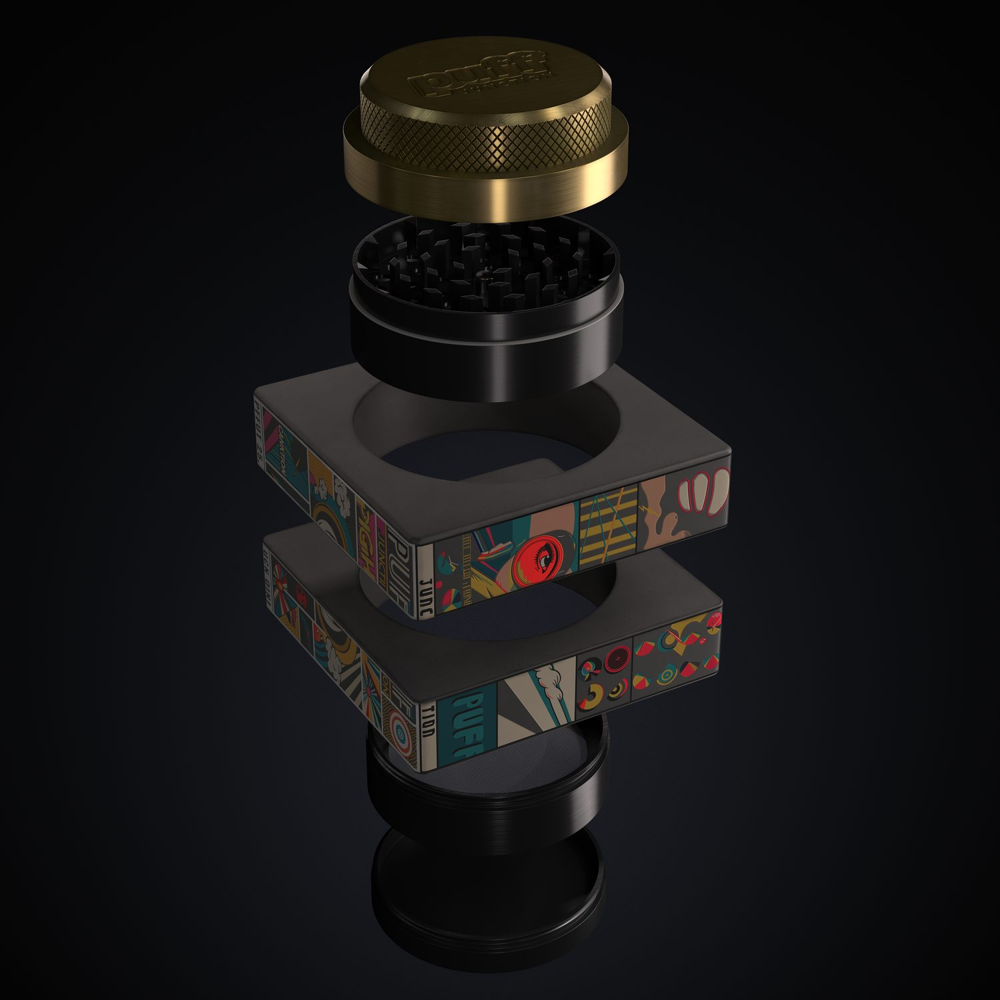
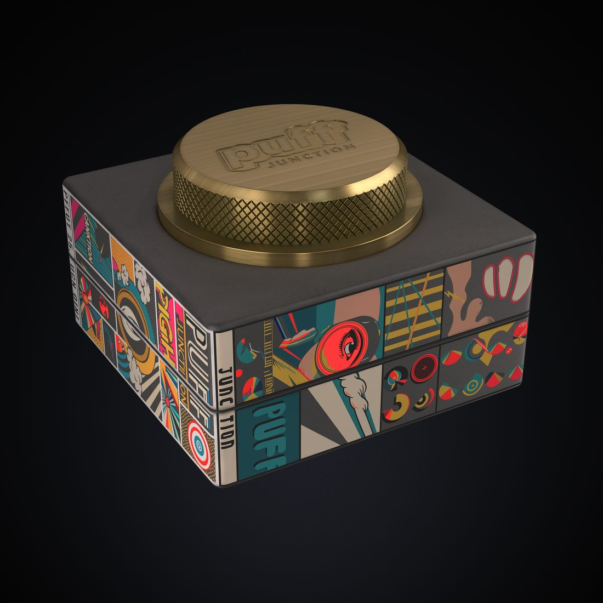
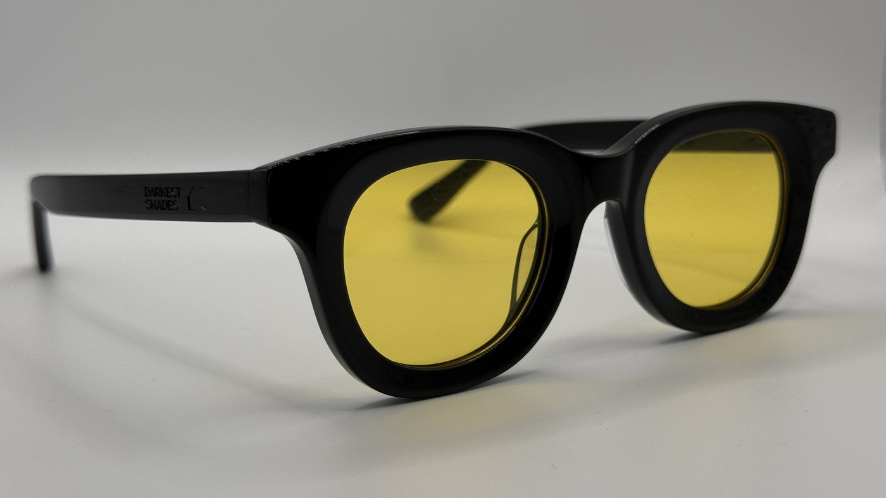
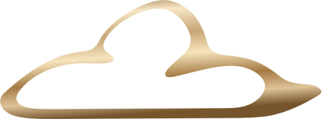
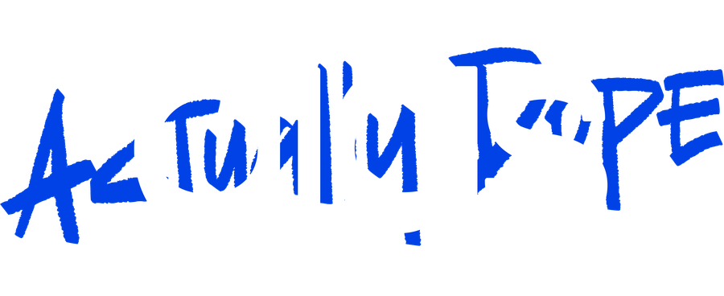
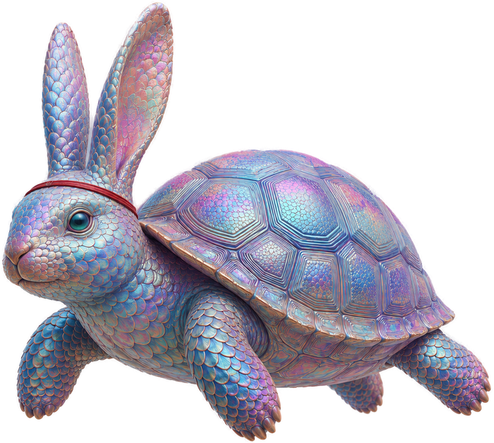

Shapshyftrs · mockups for app ideas
Your idea, real enough
to argue with.
Send us the app in your head. You get back something you can open in a browser, click through, and put in front of the people whose reaction actually matters.
Five working days · not a deck, not a wireframe
What you get
A thing that opens.
A deck describes an app. A wireframe suggests one. Neither gives anyone something to push against, so the feedback comes back polite and useless. What we hand over is real HTML you open in a browser — screens that respond, states that change, a flow you can walk someone through without narrating what they're supposed to imagine.
Base · every project
The clickable prototype.
The core screens of your idea, built and wired together. Click a thing and it does something. Open it on a phone and it works there too. Send the link to someone and they don't need you on the call to understand it.
Today
Drawn here as an example · your prototype is your idea, not this
The prototype is the whole job on its own. The three above are there when the idea needs to survive somewhere else too.
The work
Five brands. Three of them you can hold.
Most people who will mock up your app have only ever made software, where a bad guess costs a revision. Three of these went to a factory. A drawing that wasn't real enough came back as a part that didn't fit, paid for, in a box. That is where you learn what "real enough to act on" actually means — and it is the whole job of a mockup.


Puff Junction · smoking accessories
Thirteen technical drawings and a grinder that exists.
A grinder, a lighter, a stash box, a tray, an ashtray, a pouch. Drawn, rendered, dimensioned, quoted and manufactured — the brass lid knurled, the housings printed with artwork commissioned for the panels. The renders here are ours. So are the STEP files the factory cut from.
- Manufactured
- 13 technical drawings
- 3D STEP + SolidWorks
- Factory quote
- Six-product line


Darkest Shades · eyewear
We didn't render these. We made them, then shot them 323 times.
Acetate frames with the name stamped into the temple, taken from concept development through 3D files and technical drawings to a sample you can put on your face. The photograph above is a lightbox shot of the real thing — one of three hundred and twenty-three.
- Manufactured
- 323 lightbox shots
- 31 3D files
- 20 technical drawings
- Brand guidelines

Digs · apparel
A wordmark, and a spec a factory can cut from.
An identity built out properly — brandmark and wordmark in every colourway and format a printer or a factory will ask for — then put to work: tech packs, fabric specification sheets and embroidery files, drawn tight enough for a factory to cut from.
- 85 logo files
- Tech packs
- Fabric specs
- Embroidery files
- Brand strategy
The one move · #1 of 12
Reach out to Chomps.
Two plants announced, no recruiting bench. Running hot.
Compose it →Antaeus · go-to-market software
Twenty-two rooms, and ninety-one mockups to get there.
A working platform for founder-led sales teams — not a prototype, a product with a database, tests and a deploy pipeline. Every room in it was designed the way the add-on above describes: three directions, one picked, then settled. Ninety-one of those mockups are on disk. The panel beside this is one of its screens, drawn here rather than screenshotted, because a dense console shrunk into a card turns to mush.
- Shipped
- 22 rooms
- 91 mockups
- 10 design specs
- 3,700+ tests

AESDR · courseware
Twelve courses and a mascot that is an argument.
A course platform for people in their first two years of a sales job, with an app, a progress model and twelve courses behind it. Leponeus is a hare's head on a tortoise's body — the fable, in one object, for an audience being sold speed by everyone else. That is what a brand decision looks like when it is doing work rather than decorating.
- Shipped
- 12 courses
- Mascot · 8 poses
- 18 icons
- Full design canon
Why it matters for your app
A mockup is a bet about what people will understand.
Everything above is the same job in different materials. Decide what the thing is. Make it specific enough that someone else can react to it. Find out you were wrong about something while it is still cheap to be wrong. Then make it again.
An app idea is at exactly the stage a grinder is when it is still a sketch — the moment where being vague is comfortable and expensive. We are good at ending that moment quickly.
How it runs
Five working days, four steps.
- You talk, we listenOne call, or a long message if you'd rather. What the app is, who it's for, and the one thing it has to do well. No forms.
- We show the shape earlyBefore anything is polished you see the structure, so a wrong turn costs a day rather than the week.
- We build itReal screens, real states, wired together. Not images of an app — an app-shaped thing that opens in a browser.
- You get the filesA link to send people and the source itself. It's yours. Take it to any developer you like, including one who isn't us.
Five days is the working number for one app's core flow. A bigger idea takes longer and we will say so before you commit, not after.
Questions
Straight answers.
Can't I just get an AI to do this?
You can, and for a rough first look you probably should — it costs you an afternoon. What you tend to get back is a plausible-looking screen that falls apart the moment someone asks why the second step exists. The work here is the deciding: what the app is actually for, what to leave out, and which single thing the main screen is built around. The drawing is the easy half.
Do you build the real app afterwards?
Not as part of this. The prototype is the deliverable, and you own the source. Plenty of people take it to their own developer or use it to hire one — that's a good outcome, and it's why we hand over files rather than a viewing link you have to keep paying for.
What if I don't like it?
That's what step two exists for. You see the structure before anything is polished, which is the cheapest point to change direction. If the whole thing is wrong at that stage, say so and we start again or we stop — you shouldn't be paying for a week that went the wrong way in the first hour.
Will you sign an NDA?
Yes, before you tell us anything. Nothing about your idea shows up on this page or anywhere else without you saying so in writing. Every project pictured above is our own — that's why we can show it.
Why is none of your client work on this page?
Because there isn't any to show yet. This is a new offering, and everything above is work we own and made ourselves. We would rather tell you that than fill a page with invented case studies and testimonials from people who don't exist.
What do you need from me to start?
The idea in whatever form it's in — a paragraph, a voice note, a napkin photo, a half-built thing you've stalled on. If you can say who it's for and what it has to do, that's enough to begin.
Start
Send us the app in your head.
A paragraph is enough. We'll tell you what we think it is, what we'd leave out, and whether five days is the right number — before you commit to anything.
Send the idea →